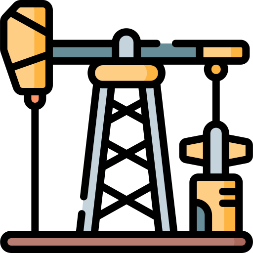

BuyHere E-Commerce Web App
JavaScript | React.js | Express.js | Node.js | MongoDB | JWT | Redux | RESTful APIs | PayPal REST API | Cloudinary | Tailwind CSS | Lucide | ShadCN UI | Jest | Postman | Render

BuyHere is a full-stack MERN e-commerce web app that allows users to authenticate, browse products, make purchases, view order history, track shipments, and review products, while allowing admins to manage inventory and orders processing.
Developed using the following technologies: Stack: MERN; Frontend: JavaScript, React.js, Redux, Lucide, ShadCN UI; Backend: JavaScript, Express.js, Node.js, JSON Web Token (JWT), RESTful APIs; Database (Cloud): MongoDB Atlas (NoSQL); Payment Method: PayPal REST API; Testing and Debugging: Jest, Postman; Images Storage Cloud Hosting Provider: Cloudinary; Web App Cloud Hosting Provider: Render.
Sleepify Hotel Booking Web App
Python | Django | JavaScript | jQuery | AJAX | HTML | CSS | Bootstrap | PostgreSQL | JWT | RESTful APIs | Stripe API | PayPal REST API | Jazzmin | Pytest | Postman | Render

Sleepify is a full-stack Django-based web app for hotel bookings that allows users to authenticate, browse hotels, book rooms, manage their profiles, and review hotels, while allowing admins to manage hotels, rooms, and bookings.
Developed using the following technologies: Stack: Python (Django), PostgreSQL; Frontend: Django, JavaScript, jQuery, AJAX, HTML, CSS, Bootstrap, Jazzmin; Backend: Python, Django, JSON Web Token (JWT), RESTful APIs; Database (Cloud): PostgreSQL; Payment Method: Stripe API, PayPal REST API; Testing and Debugging: Pytest, Postman; Database and Image Storage Cloud Hosting Provider: Render; Web App Cloud Hosting Provider: Render.
Task Management Web App
Java | Spring Boot | TypeScript | React | PostgreSQL | Docker | JPA | Hibernate | JDBC | Maven | Apache Tomcat | JWT | Tailwind CSS | REST APIs | OOP | MVC | JUnit | Postman | Flyway | Supabase | Hostinger | Render

Task Manager is a full-stack Java-based web app that allows users to authenticate and manage tasks in a secure and user-friendly environment.
Developed using the following technologies: Stack: Java (Spring Boot), TypeScript (React), SQL, Docker; Frontend: React, TypeScript, Tailwind CSS; Backend: Java, Spring Boot, Spring MVC, Spring Security, Hibernate, JPA, JDBC, JSON, JWT, Maven, Beans, Tomcat, REST APIs, OOP, MVC; Database (Cloud): PostgreSQL, Supabase, Flyway; Testing and Debugging: JUnit, Postman; DevOps & Hosting: Docker, Render, Hostinger.
AI Tool Suite Web App
Python | Gemini API | Multimodal AI | LLMs | NLP | RAG | Vector Database | Embeddings | Chroma | LangChain | Streamlit Cloud
AI Tool Suite Web App is an AI-driven platform that enables users to interact with a conversational AI assistant, generate blog posts, and upload and analyze documents (PDF, CSV) and URLs, powered by artificial intelligence.
Developed using the following technologies: Frontend: Streamlit (Python); Backend: Python; AI/ML: Gemini API, LLMs, NLP, Multimodal AI, LangChain, RAG, Embeddings; Vector Database: Chroma; Cloud Hosting: Streamlit Cloud.
Gender Recognition from Facial Images with Deep Learning
Python | Machine Learning | Convolutional Neural Network | Classification | Keras | Tensorflow | Numpy | Pandas | Matplotlib | Seaborn | Jupyter Notebooks

This project was presented at the 2024 Kansas Capitol Graduate Research Summit, earning a prestigious acknowledgment from the state of Kansas, the Kansas Governor, policymakers, and Fort Hays State University for its contribution to research and innovation.
Developed a convolutional neural network to classify a person's gender from facial images, achieving 91% validation accuracy using a dataset of over 23,000 images.
Potential applications include demographic analysis, targeted advertising, security enhancements, personalized user experiences, and medical diagnostics.
Oil Field Production Data Analysis
Python | Flask | Dash | Data Analysis | Exploratory Data Analysis (EDA) | Pandas | Matplotlib | Seaborn | Plotly | Openpyxl | Jupyter Notebooks

Performed data analysis on oil well production from Volve’s oil field using a dataset of 15,000 records. The goal was to gain insights into well performance and assist oil management in decision-making.
The analysis identified the most productive wells (5599 and 5351) and those approaching the end of their economic life due to high water production, resulting in actionable recommendations to optimize resource allocation and operational decisions.
Developed using Python and libraries such as Pandas, Matplotlib, Seaborn, and Plotly.
Bank Payment Fraud Detection
Python | Dash | Flask | Machine Learning | XGBoost | Random Forest | KNN | Scikit-Learn | Pandas | NumPy | Plotly | Dash Bootstrap Components
Developed machine learning models to identify fraudulent bank transactions using the Banksim dataset, with nearly 600,000 simulated financial operation records.
The project involved data balancing techniques (SMOTE), exploratory analysis, and building predictive models such as KNN, Random Forest, and XGBoost. The XGBoost model stood out with an accuracy of 99.15%, precision, recall, and F1-Score of 0.99, as well as an ROC-AUC of 0.99.
The final product is a Python web app with Dash (Flask), showing exploratory analysis, model performance, confusion matrices, ROC curves, and feature importance charts. The web app provides actionable insights for fraud analysts and risk teams.
Telecommunications Customer Churn Prediction
Python | Dash | Flask | Machine Learning | LightGBM | Random Forest | Gradient Boosting | Scikit-Learn | Pandas | NumPy | Plotly | Dash Bootstrap Components
Developed machine learning models to predict customer churn at a telecommunications company, using a historical dataset with over 3,000 records containing demographic information, subscribed plans, usage behavior, and payments.
The project involved data cleaning and preparation, feature engineering, and evaluation of multiple predictive models. The LightGBM model stood out, achieving an F1-Score of 0.88 and an AUC close to 0.95, enabling reliable identification of high-risk churn customers.
The final product is a Python web app with Dash (Flask), presenting exploratory analysis, model performance metrics, confusion matrices, ROC curves, and feature importance charts. The tool provides actionable insights for marketing, customer retention, and product management teams, helping implement proactive strategies to reduce churn.
Calories Burned Prediction with Machine Learning
Python | Flask | Dash | Data Analysis | Machine Learning | TensorFlow | Numpy | Pandas | Matplotlib | Seaborn | Scikit-Learn | Plotly | Jupyter Notebooks

Developed a machine learning model to predict calories burned during physical activities, achieving an impressive performance with metrics including 1.003 Mean Absolute Error (MAE), 0.999 R-Squared Score (R²), 2.035 Mean Squared Error (MSE), and 1.426 Root Mean Squared Error (RMSE), exceeding benchmark standards.
Leveraged a dataset of 15,000 records, utilizing activity duration, heart rate, and body temperature as predictors. Conducted exploratory data analysis (EDA) to uncover patterns, trends, and outliers through visualizations, descriptive statistics, and correlation analysis.
Implemented multiple regression models, including XGBoost, Extra Trees, Multi-layer Perceptron (MLP), Random Forest, Gradient Boosting, K-Nearest Neighbors (KNN), Linear, Lasso, Ridge, SVM, ElasticNet, Decision Tree, Huber, and Bayesian Ridge, to identify the optimal approach.
AES and RSA Encryption
Python | Streamlit Cloud | Visual Studio Code

This Python application encrypts and decrypts messages, supporting AES and RSA ciphers.
Developed the encryption and decryption algorithms from scratch, creating a system that shows each step of the AES process, including the initial key, round keys, and ciphertext for each 16-byte block.
The AES cipher uses a key size of 256 bits, and the RSA cipher can generate public key pairs (n, e) and private key pairs (n, d) with 80 or 128 bits.
System Administration using Linux
Linux (Red Hat Enterprise Server, CentOS, Ubuntu) | Windows | VMware Workstation

Configured and administered server and network services on Red Hat Enterprise Linux for a company, adapted to its business volume.
Configured essential services such as IP, DHCP, DNS, HTTP, FTP, NIS, NFSv4, YUM, Samba, OpenLDAP, LVM setups (PV, VG, LV), SWAP memories on two Red Hat Enterprise Linux servers, and configured DHCP in CentOS Linux clients.
Enhanced security by restricting server access to admin accounts, securing department folders, and using NFS to share directories between servers and clients.